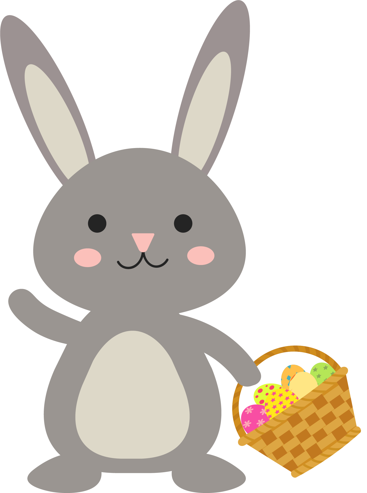
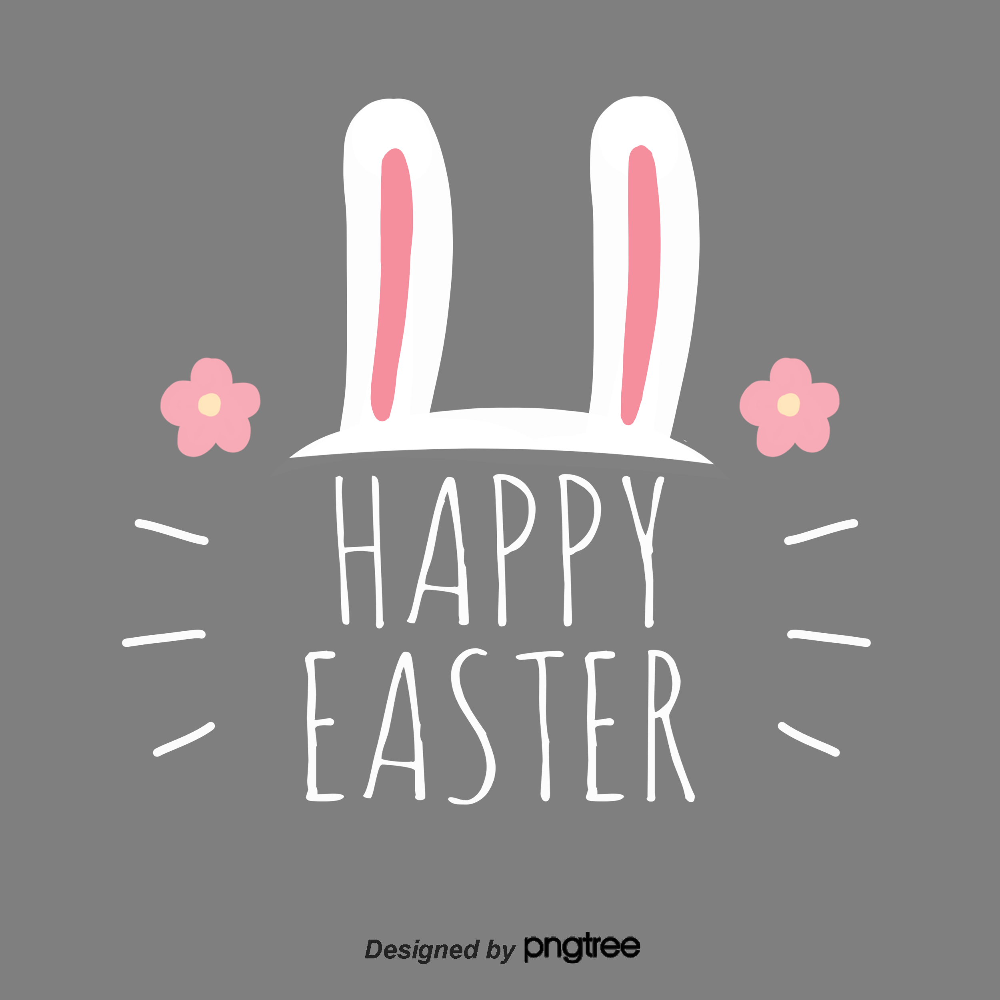

首页
离开
帮助
万圣节
圣诞节
复活节
升天节
受难节
复活节简介
复活节（Easter)是一个西方的重要节日，在每年春分月圆之后第一个星期日。基督徒认为，复活节象征着重生与希望，为纪念耶稣基督于公元30到33年之间被钉死在十字架之后第三天复活的日子。 复活节中美国人的食品也很有特点，多以羊肉和火腿为主。复活节彩蛋精美漂亮且富有装饰性，它们代表着人们的美好心愿，并与你分享季节更替的喜悦。
复活节意义
传统的复活节是持续一周的，为了纪念耶稣骑驴进入耶路撒冷直到耶稣受难复活。复活节前的这一周被称为圣周，共七天，纪念耶稣进入耶路撒冷，经受苦难，受刑并复活的一周。
耶稣因爱重生， 听得见我们虔诚的祷告，会赐力量给我们，让每一天充满希望。在这个“复活”的日子里，耶稣为我们准备了爱和祝福，希望我们的心灵也能经历复活的大能，满怀信心活出全新的你。

复活节习俗
过去，在多数西方国家里，复活节一般要举行盛大的宗教游行。游行者身穿长袍，手持十字架，赤足前进。他们打扮成基督教历史人物，唱着颂歌欢庆耶稣复活。复活节的另一象征是小兔子，原因是它具有极强的繁殖能力，人们视它为新生命的创造者。人们按照传统习俗把鸡蛋煮熟后涂上红色，代表天鹅泣血，也表示生命女神降生后的快乐；大人孩子三五成群地聚在一处，用彩蛋作游戏。
